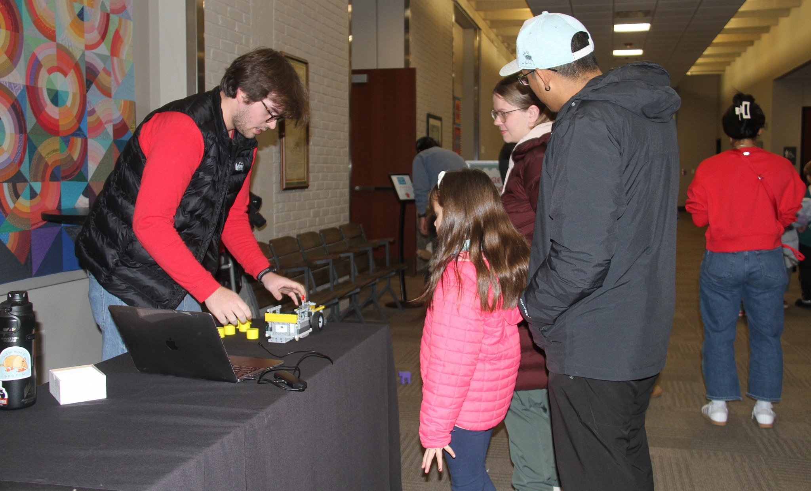
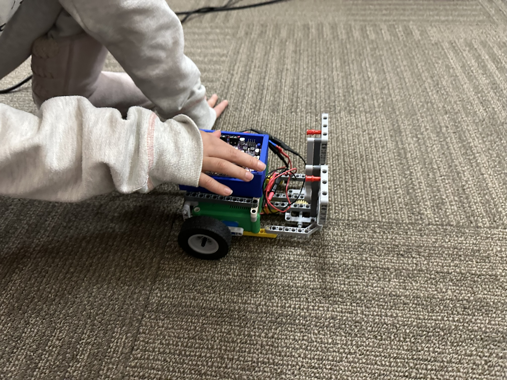
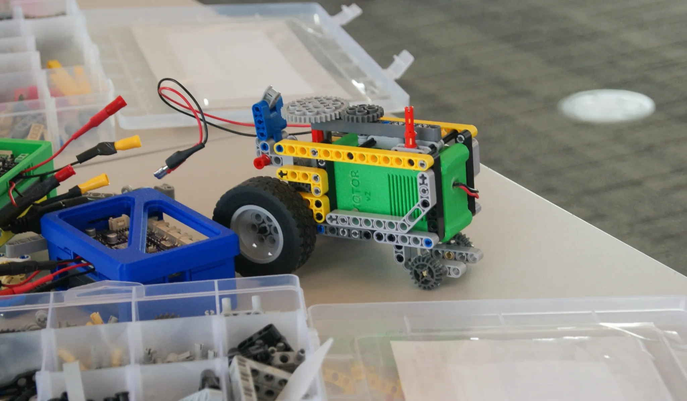

PROTO is designed to remove friction at the start and add depth as students grow. The goal is confident builders who understand why things work — not just how to follow steps.

Students prototype, test, and improve rapidly — turning “mistakes” into data.
Builds create natural roles: builder, tester, coder, documenter — then rotate.
Mechanisms, torque, gearing, and constraints become tangible — not abstract.
PROTO is an instrument to solve the challenges of STEM education. The PROTO Team has developed a complete robotics platform that teaches students about all aspects of robotics, while remaining affordable and easy for use by educators and parents alike.
PROTO brings to market a comprehensive robotics solution that is adaptable and easily implemented into the classroom. We offer robotics kits, an online programming environment, and, importantly for teachers, comprehensive supporting curriculum.
We don’t just provide a box full of parts, the PROTO platform is the only one that offers a plug-and-play experience to introduce students, and teachers, to robotics.
When asked about why we chose to study engineering at Nebraska, the common theme is “I did robotics while in high school.”
Programs like this one were what made us fall in love with robotics and engineering. We believe all kids deserve this same opportunity.
Short builds fit into class periods with clear milestones.
End-of-day organization keeps the kit clean and repeatable.


The spark matters. PROTO is built to help programs run consistently, so more students can discover they’re capable of building, coding, and solving real problems.
Mechanisms and code connect immediately — no long onboarding needed.
Works for classrooms, clubs, camps, and district-wide programs.